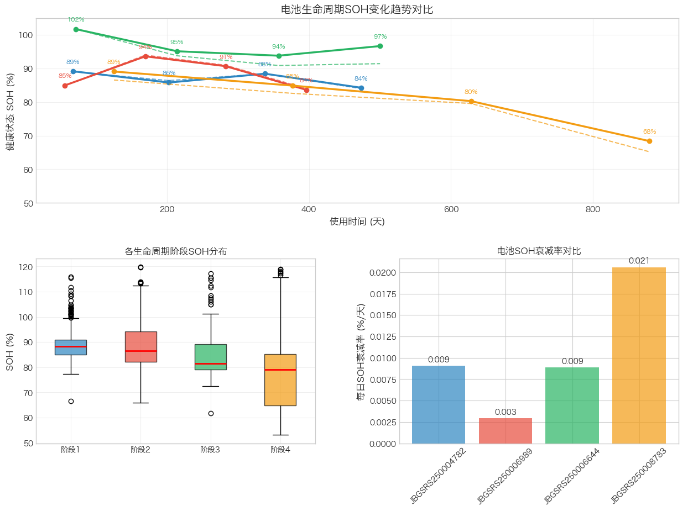
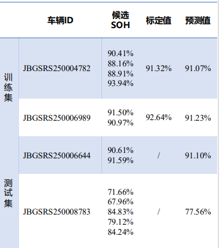
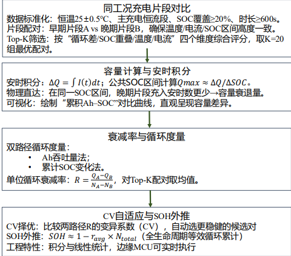
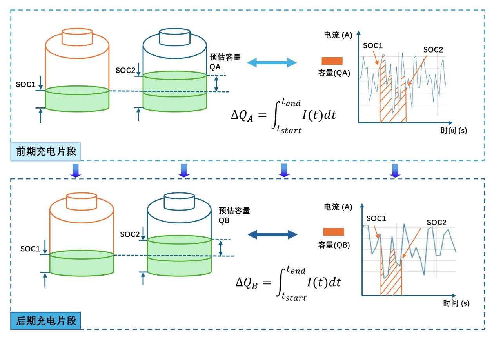
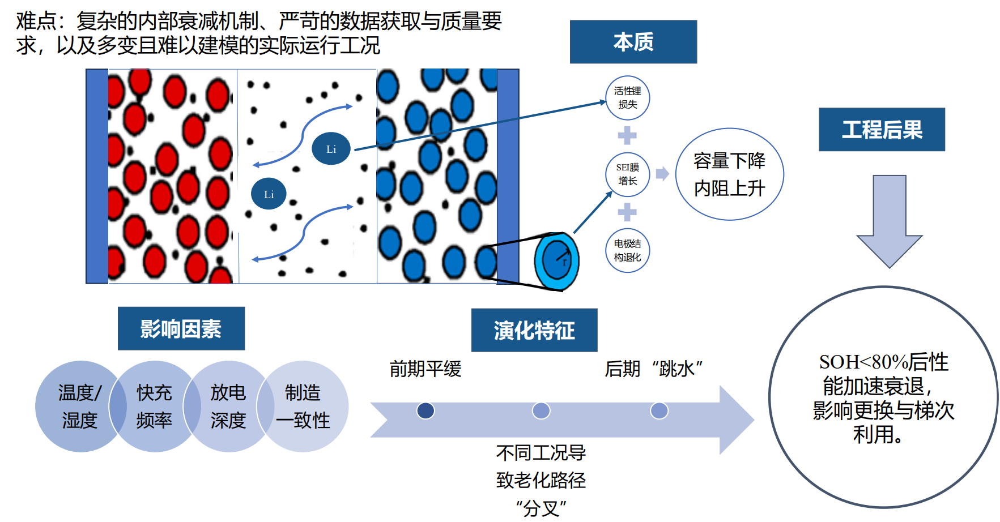
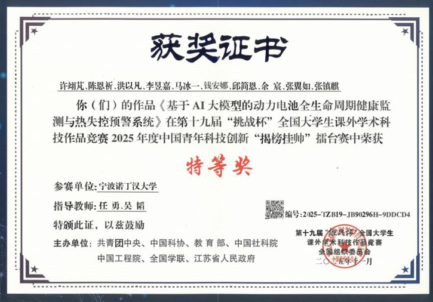

2025.07–2025.09
锂电池健康状态评估
负责从实车 BMS 数据中筛选可比充电片段，基于容量衰减估算电池 SOH。
Python · BMS 数据 · SOH
项目背景与目标
待补充：项目需要解决的具体问题、约束条件和目标。
工作内容与方法
筛选同工况充电片段，在固定 SOC 区间用安时积分计算容量；比较基于 Ah 吞吐量与 SOC 变化的循环次数计算路径。
成果与验证
负责 SOH 评估模块。项目团队获得第十九届挑战杯“揭榜挂帅”擂台赛特等奖。
项目图集






后续补充资料
补充估算结果、参考值来源、误差指标及验证条件。 图片为可选项，没有合适素材时可以删除这一提示区。
总结与收获
待补充：遇到的困难、关键选择，以及学到的方法。
← 返回项目列表